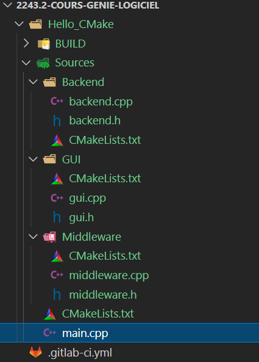

2243.2 Génie Logiciel - 2026-2027
Git, Visual Studio Code, GCC
Ninja
CMake
TUTO Compilation séparée avec CMake
Exercices
#include <iostream>
int main()
{
std::cout << "Hello world" << std::endl;
return 0;
}
gcc .\main.cpp -lstdc++
Comment on fait pour des
projets de grande taille ?
Ninja
(Makefile sous caféine)
ninja_required_version = 1.3
# The arguments passed to configure.py, for rerunning it.
configure_args =
root = .
builddir = build
cxx = g++
ar = ar
cflags = -g -Wall -Wextra -Wno-deprecated -Wno-missing-field-initializers $
-Wno-unused-parameter -fno-rtti -fno-exceptions -fvisibility=hidden $
-pipe '-DNINJA_PYTHON="python"' -O2 -DNDEBUG -DUSE_PPOLL $
-DNINJA_HAVE_BROWSE -I.
ldflags = -L$builddir
rule cxx
command = $cxx -MMD -MT $out -MF $out.d $cflags -c $in -o $out
description = CXX $out
depfile = $out.d
deps = gcc
rule ar
command = rm -f $out && $ar crs $out $in
description = AR $out
rule link
command = $cxx $ldflags -o $out $in $libs
description = LINK $out
# browse_py.h is used to inline browse.py.
rule inline
command = "$root/src/inline.sh" $varname < $in > $out
description = INLINE $out
build $builddir/browse_py.h: inline $root/src/browse.py | $root/src/inline.sh
varname = kBrowsePy
Comment écrire un tel
fichier ?
Comment compiler le
même projet, mais sur des
plateformes différentes
(Visual Studio / cl.exe,
XCode / clang,
Linux / GCC, etc.) ?
Pour
Gère les dépendances, tout comme Makefile
Exemple
project(Hello_CMake)
add_library(2242.1_Hello hello.cpp hello.h)
add_library(2242.1_World world.cpp world.h)
add_executable(2242.1_Main main.cpp)
target_link_libraries(2242.1_Main 2242.1_Hello
2242.1_World)
Commande
add_subdirectory(World)
Exécute CMake dans ces sous-répertoires
Commande
add_subdirectory(Middleware)
add_subdirectory(Backend)
Exécute CMake dans ces sous-répertoires

#include "GUI/gui.h"
#include "Backend/backend.h"
#include "Middleware/middleware.h"
#include <iostream>
int main()
{
GUI gui;
Middleware middleware;
Backend backend;
gui.Run();
middleware.Run();
backend.Run();
return 0;
}
Voir site du cours